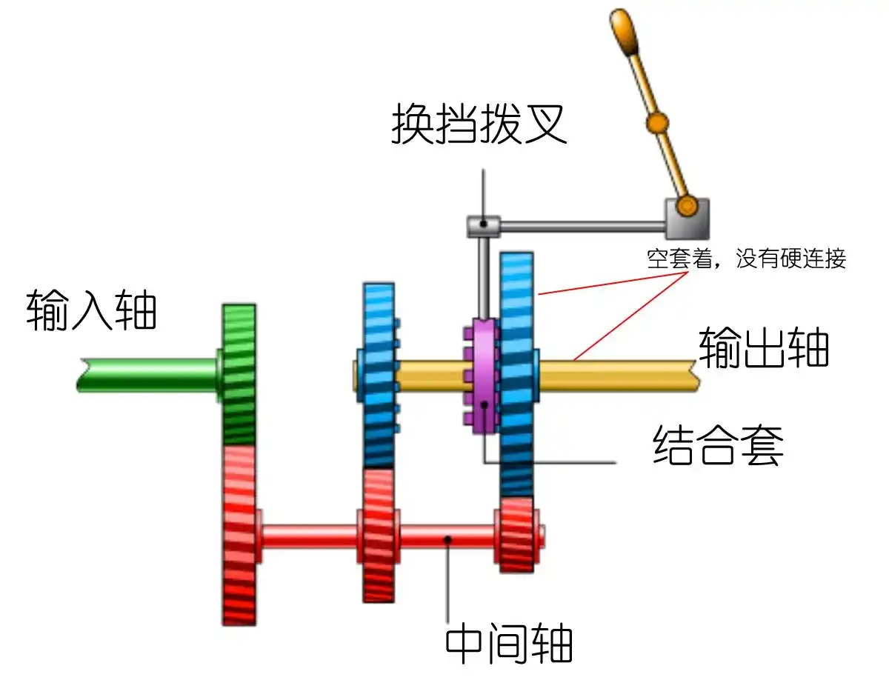
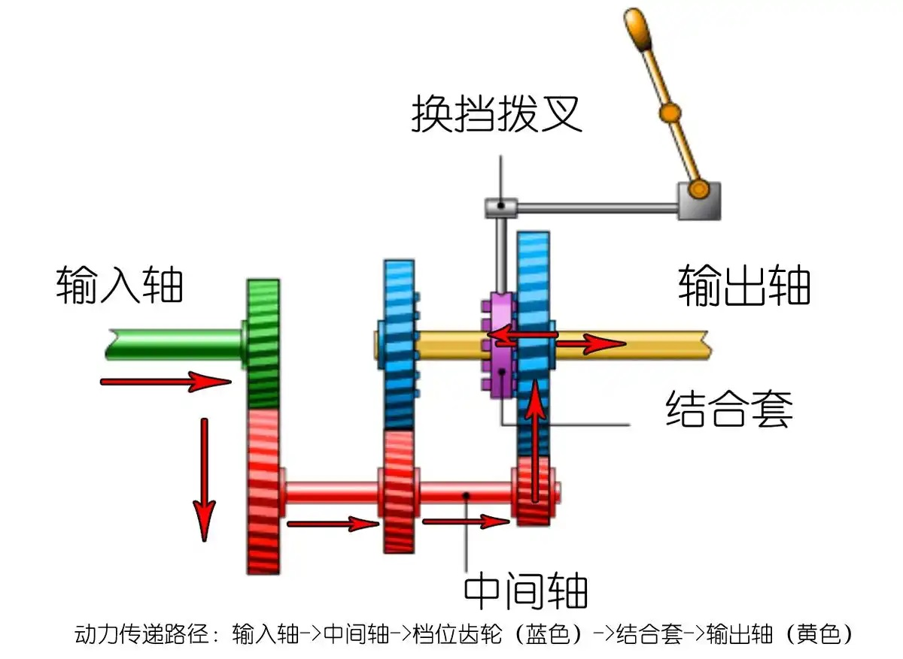
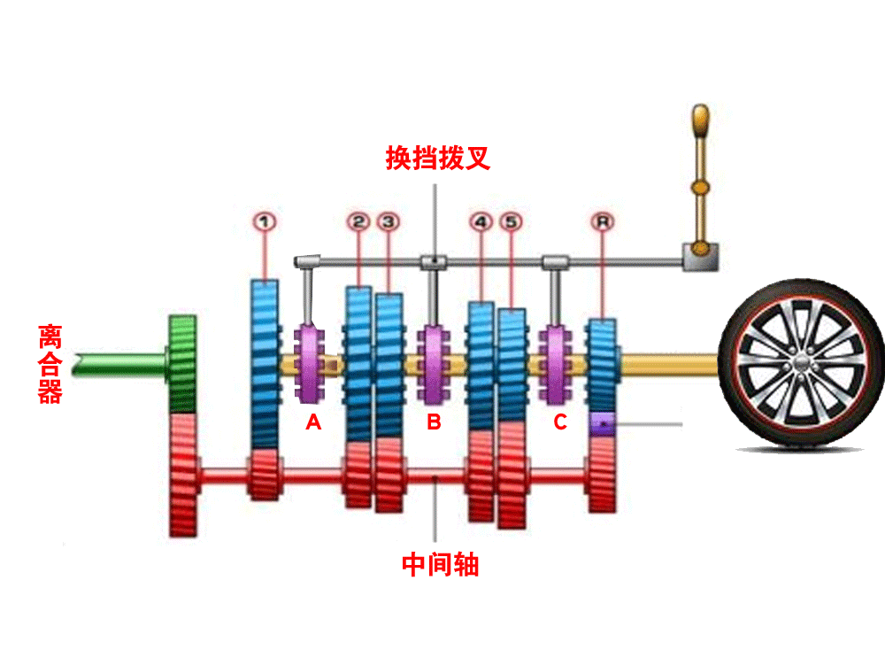
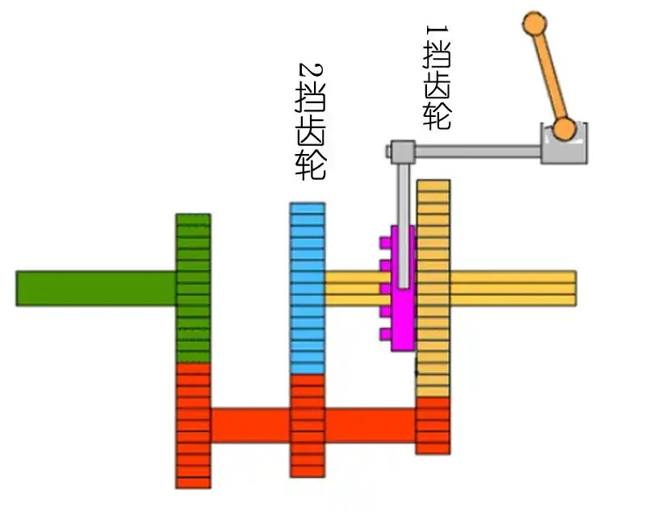
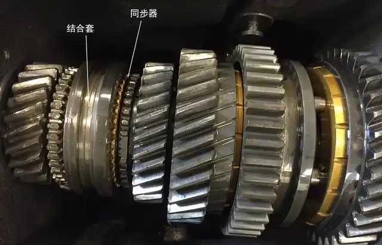

汽车趣闻：为什么没同步器的车换挡需要两脚离合？
相信大家一定听说过“同步器”这个东西，这是手动变速箱里的一个零件，据说可以让挂挡变得更加轻松流畅。而且你一定还听说过以前的老车不带同步器，司机换挡都要踩两脚离合。
估计很多新手朋友也只是听过这样的说法，但不明白同步器到底是怎么工作的，更不明白没有同步器的老车为什么换挡时需要踩两脚离合。其实同步器的工作原理非常简单，我们一起来看看吧。
想弄明白同步器的工作原理，我们要先搞清楚手动变速箱是怎么换挡的。
想必很多人都觉得手动变速箱换挡时就是驱动不同的齿轮去结合，匹配出不同的档位。其实并不是这样的。手动变速箱的设计非常巧妙，它的所有挡位齿轮都是永远处于啮合状态的。那就有人不理解了：齿轮大小都不一样，都啮合(输入轴、输出轴上的齿轮都啮合在中间轴上)在一起还怎么正常转动呢？

其实原理很简单，比如上图就是一个手动变速箱的原理示意图，它的挡位齿轮永远处于啮合状态，但蓝色齿轮和黄色的输出轴并没有硬连接，只是空套在上面，因此每个齿轮都可以自由转动而互不干涉。

输出轴上有一个叫做结合套的零件，就是图中紫色的那个，它通过键槽卡在输出轴上，与输出轴同步转动，也可以左右移动。需要换挡的时候结合套可以左右移动与对应的档位齿轮咬合，这样就把档位齿轮与输出轴锁定在一起，这个齿轮就开始真正传递动力了。

就像上图这样，需要挂哪个档位，结合套就移动过去，把对应的档位齿轮与输出轴锁定起来，这个齿轮就开始承担起传递动力的任务了。
弄明白手动变速箱的工作原理后我们就开始聊同步器了。
同步器位于结合套上，它的作用就是在结合套与档位齿轮结合时帮助两者同步转速同时让两者更迅速结合的。
因为换挡的时候结合套需要与档位齿轮啮合，而两者转速差越小就越容易啮合，挂挡就越轻松快捷。

但变速箱不同挡位齿轮的转速是不同的，比如上图，假设变速箱当前正用1挡工作，很明显2挡齿轮要比1挡齿轮转得更快，而结合套和1挡齿轮转速相同，那么在挂2挡时转速更低的结合套要与转速更高的2挡齿轮啮合，由于两者存在转速差，所以挂挡时就不容易啮合，挂挡就困难。

而同步器就可以解决这个问题，它位于结合套侧面，是一个环形零件。当我们移动挡杆驱动结合套与档位齿轮啮合时同步器会先与挡位齿轮接触，接触瞬间同步器表面的粗糙颗粒与档位齿轮摩擦，迫使挡位齿轮的转速与结合套同步，这样挂挡就非常顺畅了。
那两脚离合又是什么操作呢？为什么它能实现同步器的作用呢？
其实两脚离合主要在在不带同步器的车上降挡时使用，升挡的时候一般用不到。因为在换挡时高挡位齿轮永远比低挡位齿轮转得快，所以升挡时同步器负责拉低高挡位齿轮转速，降挡时同步器负责提升低挡位齿轮转速。而换挡时要松油门踩离合，此时高挡位齿轮的转速刚好降低了，所以就算没有同步器也容易挂挡。而降挡时低挡位齿轮本来转得就慢，松开油门后转速就更慢了，这时结合套与挡位齿轮的转速差更大，很难挂进去。这时候就用到两脚离合了。
说起来两脚离合的原理也很简单。
比如司机要从2挡降入1挡，由于1挡齿轮转速本来低，挂挡时离合器踩下去后1挡齿轮失去动力转速就更低了。这时候想要顺利挂入1挡就需要想办法把1挡齿轮转速给提高一些。怎么提高呢？方法很简单：先挂入空挡并松开离合器，然后猛踩一脚油门，这样发动机转速提升，带着所有挡位齿轮一起提高转速，1挡齿轮的转速自然也就提升了，这时候1挡很轻松就挂入了。
这就是传说中老司机的两脚离合降挡法，只要弄明白原理，操作起来很简单，而且操作感极强，可玩性极高。
至今还记得小时候看那些大货车爬坡时老司机用两脚离合降挡的场景：爬坡时发动机吭哧吭哧感觉就要使不上劲了，然后突然发动机声音变小了，这时候是司机在松油门摘空挡。然后发动机突然很有力的轰鸣一声，这是司机在空挡轰油门同步转速呢。紧接着伴随着咔的一声，发动机声音再次变大，这是司机重新踩离合降入低挡位了。
其实你要有手动挡车的话你也可以体会一下两脚离合降挡，具体操作是先用2挡行驶，适当提高车速，比如25公里/小时，然后踩离合降1挡。这时候你会发现1挡很难挂进去，这是因为1挡和2挡减速比落差太大，导致齿轮转速差太高不容易啮合。这时候你立马挂空挡，同时松开离合器轰一脚油门，把转速踩到2000转以上，接下来你会发现1挡轻轻一推就挂上去了。因为轰油门的时候强制把1挡齿轮的转速给带起来了。
这就是手动挡，好玩还便宜还耐用的手动挡。

评论
1 半挂八轮很多都没有同步器。
2 五抢三档
为避免顿挫、熄火或损伤变速箱，应遵循以下规范动作：
2.1 松开油门，让车辆自然减速；
2.2 果断踩下离合器踏板至底，切断动力；
2.3 将变速杆从5档移至空挡；
2.4 轻踩一下油门（补油），提升发动机转速至接近3档对应值（例如车速80 km/h时，3档对应约3000 rpm）
2.5 挂入3档，随后平稳松开离合器。
3 老拖拉机的变速器可能没有同步器。
4 十年前生产的货车基本没有。现在这些年配置高了开始普及了。
5 转速匹配好的情况下，离合器都可以不用也能丝滑换挡。
6 手动变速箱耐用是因为中国合金钢技术进步了，80年代引进先进炼钢技术以前 变速箱齿轮很容易打齿的。
7 我学驾驶时升档是两脚离合，降档是两脚离合中间加一脚空油，空油视情而定，对档位之间最适宜车速把控，误差越大加空油越大，越级换档空油更大，几乎全油门
8 升档，踩-摘-踩-挂，降档，踩-摘-轰-踩-挂。踩是踩离合器，轰是轰油门。
9 我开老解放（cA10B型）也是一脚，有时还不用离合器。加档：松油脱档，油门声落进档；减档：松油脱档，加油同时进档再松点油然后再加油车就平稳行走
10 轿车就不必了，手动档轿车开到报废变速器都 坏，甚至变速器油都不用换。
11 关于两脚离合，小时候坐公共汽车，记得一个很有趣的现象：BK663型汽车使用的是旧解放动力总成，需要两脚离合；BK663B使用新解放底盘，一脚离合就行了。
12 现在用两脚法换档的很少，几乎看不到，甚至都没听说过，除了上世纪九十年代前的老司机，因为操作繁琐，基本淘汰。但重型货车为延长变速器中的同步器寿命，节约成本，还是有价值的。